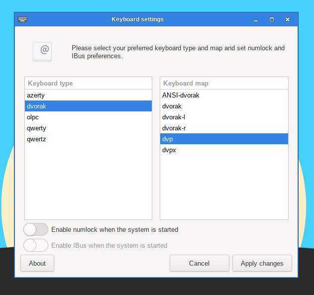

This utility will configure the keyboard layout being used both in the graphical and non-graphical environments. Modifications are applied instantly.

Note that if you would like to activate Ibus during the start up, you can do so by ticking the optional box.
To execute this utility in a terminal, simply type
sudo keyboardsetup